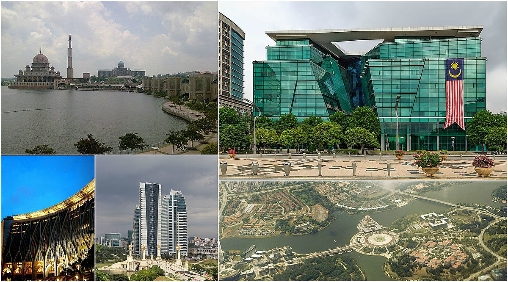

January25

The idea of building a new city to serve as
the Federal Government Administrative Center of Malaysia had been deliberated for a long time.
In June 1993 the site at Perang Besar was selected for the purpose based on its
strategic location. The first concept Master plan was developed a year later in 1994.
The master plan envisaged that Putrajaya would be built as a 'City in a Garden' and reflecting a 'parkland' setting.
Putrajaya would be a city where people could enjoy an enhanced 'quality urban living' in an
environment 'rooted in Malaysian culture and tradition' and an environment
that embodies the trinity of relationships between Man and his Creator, Man and his fellow Man and Man and his Environment.
The land on which Putrajaya now stands was formerly known as Prang Besar,
part of the state of Selangor. The Federal government negotiated with the state on the prospect of another Federal
Territory and in the mid-1990s, the Federal government paid a substantial amount of money to Selangor for approximately 11 320 acres (46 km²) of land. As a result of this land purchase,
now completely surrounds two Federal Territories within its borders, namely Kuala Lumpur and Putrajaya
The city of Putrajaya is one of a series of ambitious urban pro-jects in Malaysia that reflect the state’s
commitment to craft a par-ticular national identity and to gain recognition on the
world stage.As the new federal administrative capital of Malaysia, Putrajaya is the new home to all federal-level government ministries,
civil servants and their families
